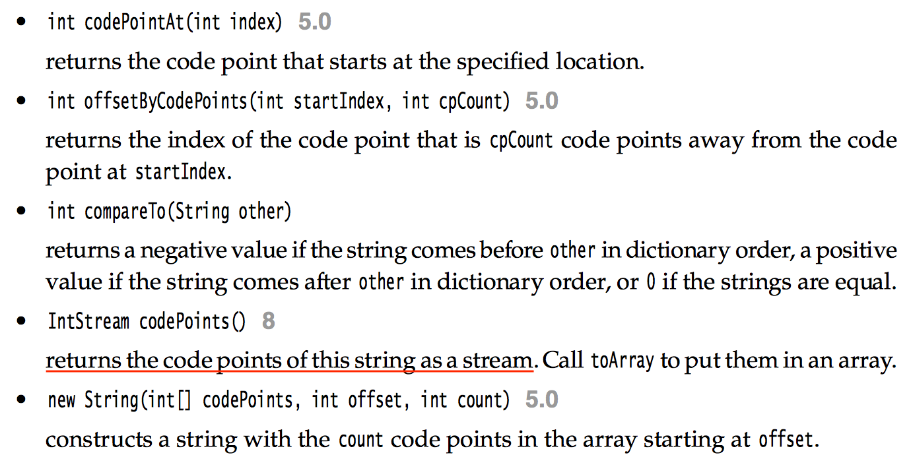

This note is going to record my learning experience of Java. Actually I have learned it on Xidian course, but now I need to go deep and maybe it will be my career. So this time I will take it more seriously.
For the fundamental part of this book, I will go through it quickly and record some details that is important.
Chapter 3 Fundamental Programming Structure
3.1 codepoint
For the fundamental data type char, it is insufficient to represent all characters by one char variable, that is to say sometimes it is necessary to represent one characters by two char variables. And when it happens, the length() will be getting confusing.
Instead of making this char system more convenient, Java develops many methods to operates on this existing system.

3.2 building strings
Occasionally, we need to build up strings from shorter strings, such as keystrokes or words from a file. It would be inefficient to use string concatenation for this purpose. Every time we concatenate strings, a new String object is constructed. This is time consuming and wastes memory. Using the StringBuilder class avoids this problem.
1 | StringBuilder builder = ner StringBuilder(); |
And its multi-thread version is StringBuffer. When there is only one thread, it is better to use StringBuilder.
3.3 ‘<’ flag in printf
We can use the < flag. It indicates that the same argument as in the preceding format specification should be used again.
1 | System.out.printf("%s %tB %<te, %<tY", "Due date:", new Date()); |
Another trick could do the same job is
1 | System.out.printf("%1$s %2$tB %2$te, %2$tY", "Due date:", new Date()); |
A format string can indicate the index of the argument to be formatted. The index must immediately follow the %, and it must be terminated by a $.
3.4 file input and output
If the file name contains backslashes, remember to escape each of them with an additional backslash: “c:\\mydirectory\\myfile.txt”.
3.5 array
The array length need not be a constant: new int[n] creates an array of length n.
A Java array is quite different from a C++ array on the stack. It is, however, essentially the same as a pointer to an array allocated on the heap.
for-each feature is like value-transmit, that is to say, modifying the element doesn’t influence the original value.
Java has no multidimensional arrays at all, only one-dimensional arrays. Multidimensional arrays are faked as “arrays of arrays.”
Since rows of arrays are individually accessible, we can actually swap them!
1
2
3double[] temp = balances[i];
balances[i] = balances[i + 1];
balances[i + 1] = temp;It is also easy to make “ragged” arrays—that is, arrays in which different rows have different lengths.
1
2
3int[][] odds = new int[NMAX + 1][];
for (int n = 0; n <= NMAX; n++)
odds[n] = new int[n + 1];
Chapter 4 Object-Oriented Programming
All Java objects live on the heap.
In Java, we must use the clone method to get a complete copy of an object.
It is a good idea to stay away from using deprecated methods because they may be removed in a future version of the library.
For-each loops are not appropriate when we want to modify the array
4.1 relationships between classes
dependence - ‘uses a’
a class depends on another class if its methods use or manipulate objects of that class.
stackoverflow: is a weaker form of relationship and in code terms indicates that a class uses another by parameter or return type.
And we should try to minimize the number of classes that depend on each other. The point is, if a class A is unaware of the existence of a class B, it is also unconcerned about any changes to B. (And this means that changes to B do not introduce bugs into A.) In software engineering terminology, we want to minimize the coupling between classes.
aggregation - ‘has a’
implies a relationship where the child can exist independently of the parent.
inheritance - ‘is a’